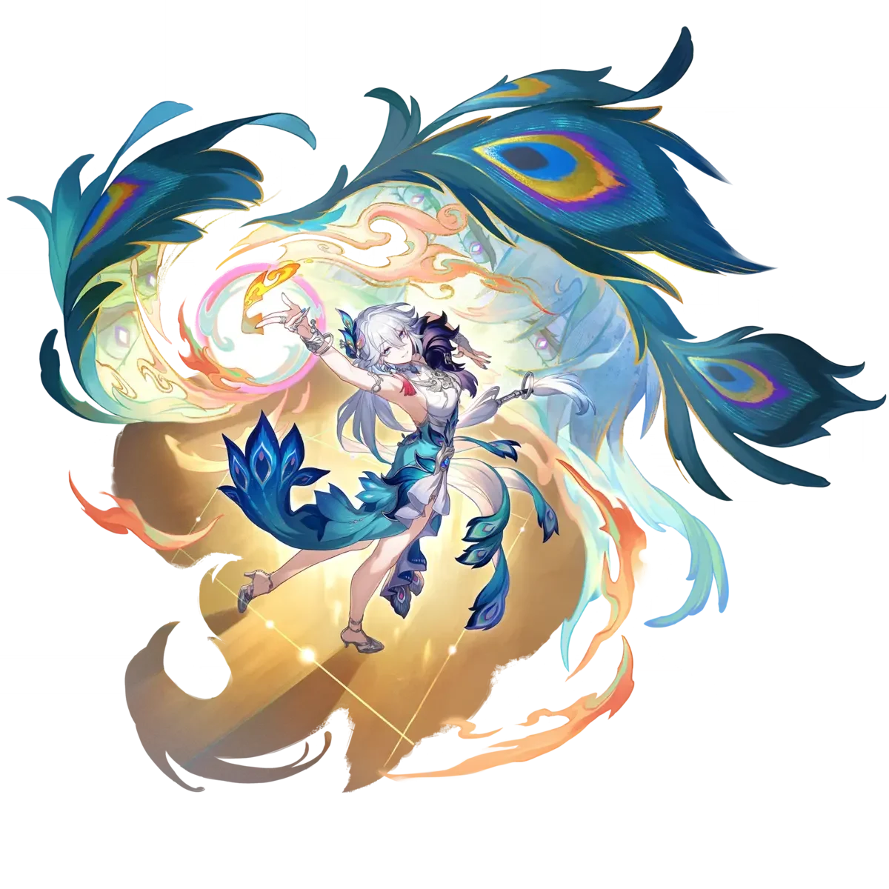
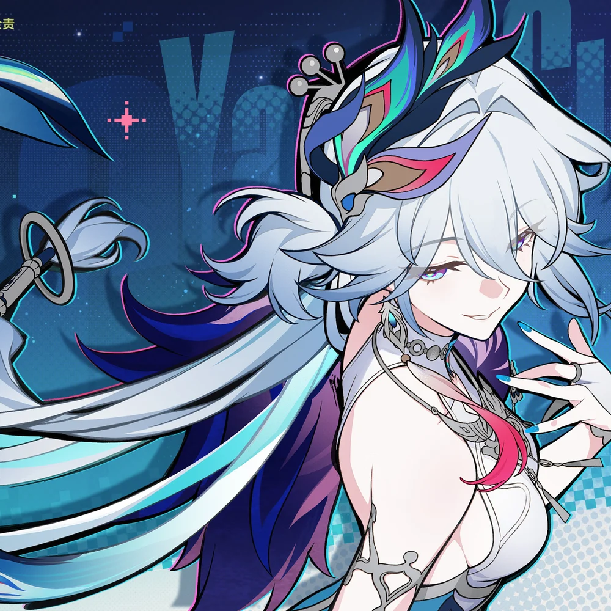
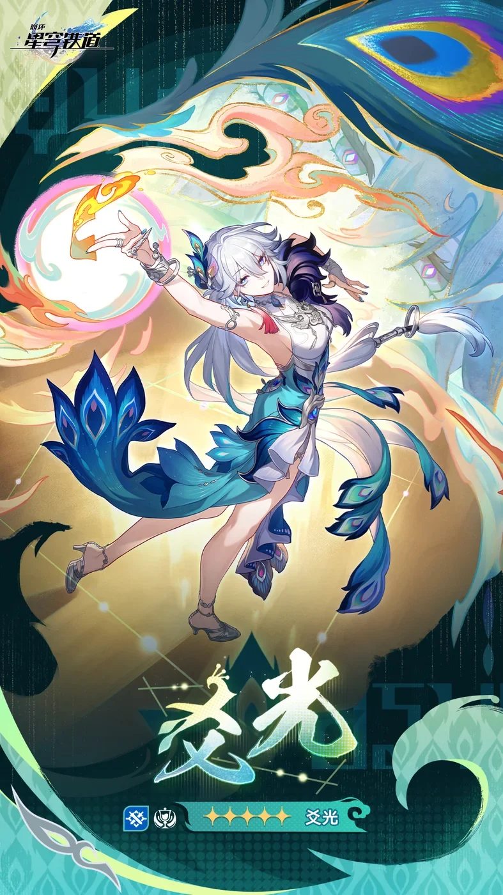
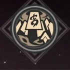
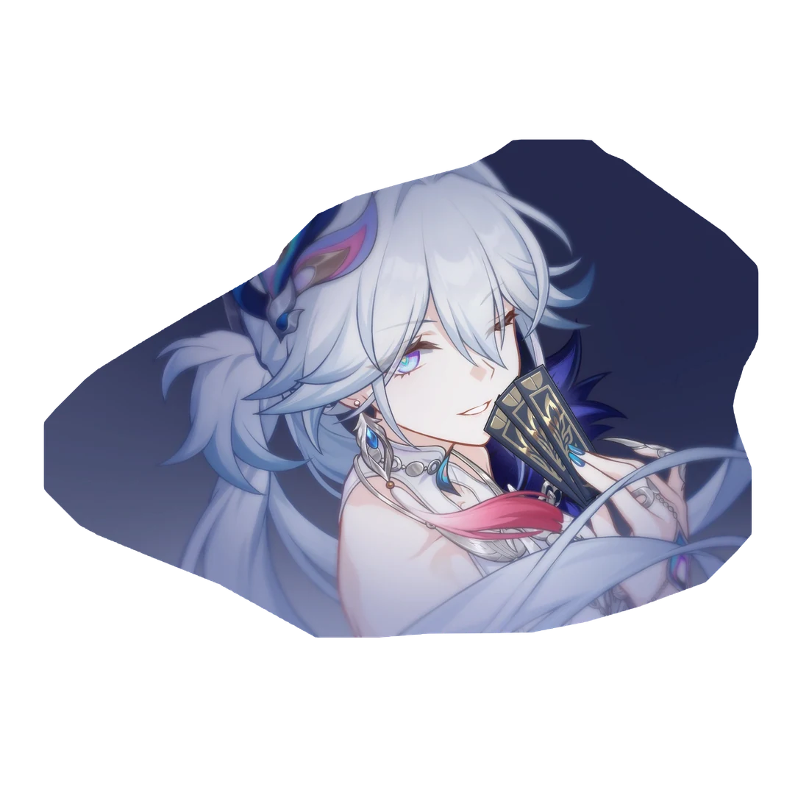
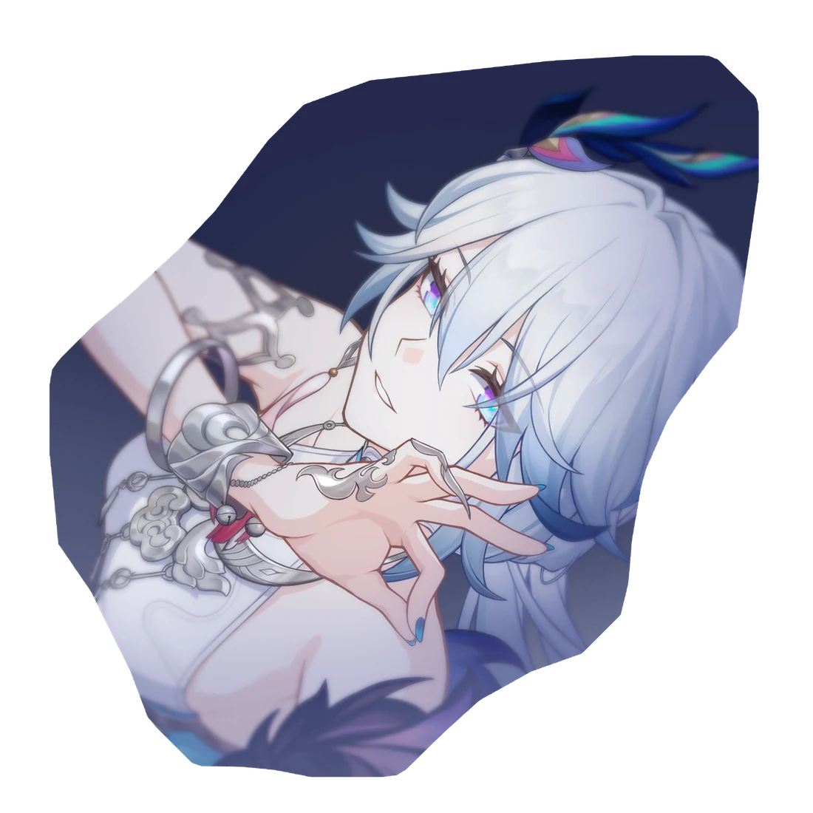
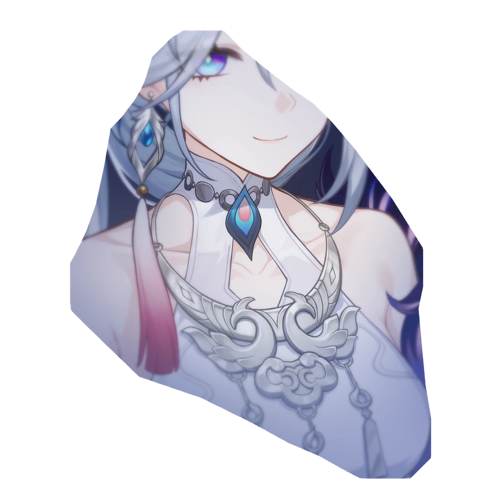
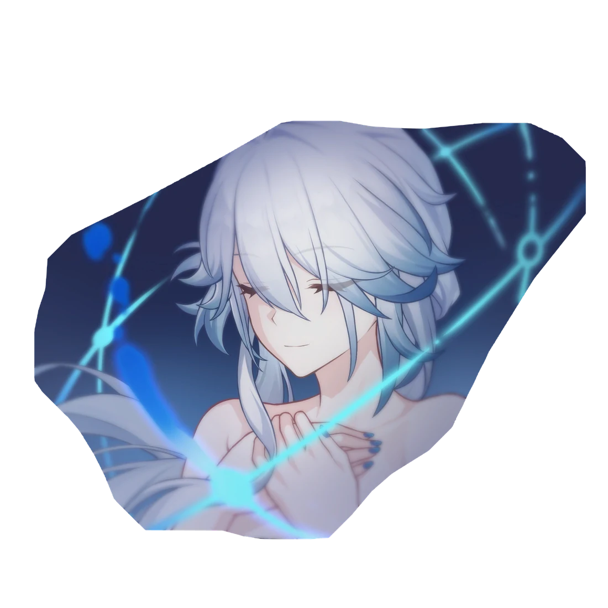
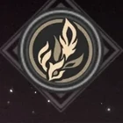
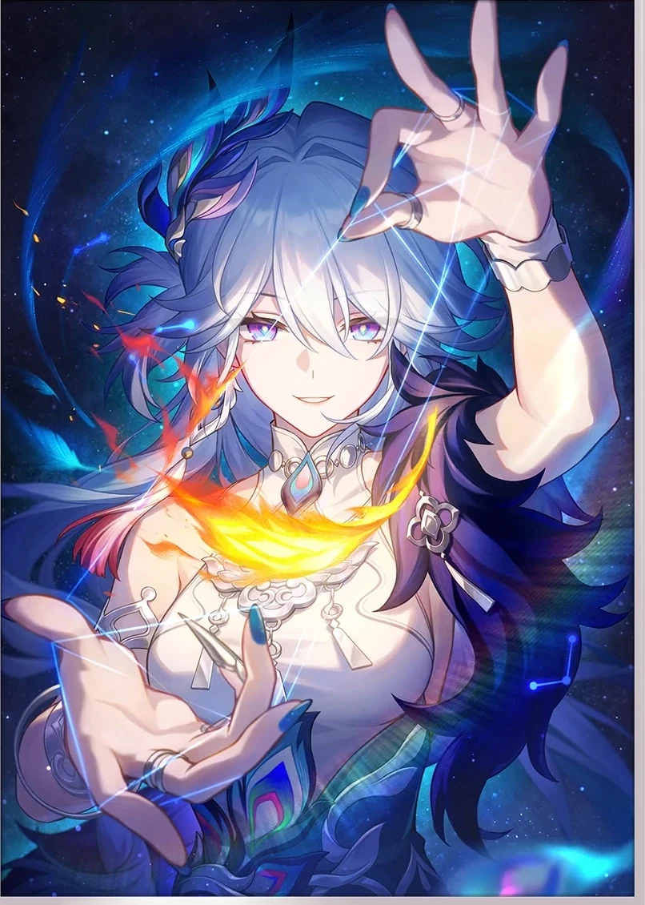

缺席的晨会
玉阙太卜司的晨会上她缺席，因为她去参加了玉阙杯牌赛。她自创卜算之法挑战老师， 子夜把一群青年卜者叫来试验外邦卜术；同辈叫她「爻总」。她跨坐在房顶的候风仪上等风， 说师傅给她算过「震惊百里，不丧匕鬯」——那雷声不是雷，是玉阙掠过星云时星尘的震动。
—— 卦曰：震惊百里，不丧匕鬯
爻光
YAO GUANG / GENERAL OF YUQUE

// 仙舟「玉阙」 · 帝弓七天将 · 欢愉 / 物理
YAO GUANG
神秘，大胆，激进，求变之举令人瞠目结舌。
以巡猎之「眼」遍观吉凶，明知天意难违，「戎韬将军」仍旧孤身涉险。
// 02 — 简介 / PROFILE
神秘，大胆，激进，求变之举令人瞠目结舌。
以巡猎之「眼」遍观吉凶，明知天意难违，「戎韬将军」仍旧孤身涉险。
这一支下下签，如何能够改运换天？ —— 角色详情
仙舟联盟「帝弓七天将」之一，封号「戎韬将军」，驻守配备瞰云镜的巡猎星舰「玉阙」。 她同时是遍智格物院荣誉院长、十方光映法界之主，也是仙舟非物质文化遗产「雀形拳」的传人。
在民间，人们更爱叫她「爻老板」。她替人卜算、看签、改运，被视作带来吉兆的财神； 而在牌桌上，她又是那个「上上签」般的存在——毕竟她的兴趣就是打牌。
她并不喜欢端坐幕后。身为卜者之尊，却不信事由前定；比起替人算出一条最稳妥的路， 她更爱亲自入局，把自己变成那个打破既定命运的「变数」。

拆解立绘中的主色，理解她「华丽但不压人」的气质来源。
// 03 — 台词 / VOICES
从档案、PV、剧情到联名小曲——同一个意思，她有一百种说法。
福祸无门，
—— 即兴巡演 PV「吉凶之外」
惟人自召。
「我看到了什么并不重要，重要的是我能做到什么。」
「原来命运还有这样的道路。」
「如果躲不开的话，不妨安心享受这难得一见的奇景吧！」
「瞧，这一招你算到了吗？」
「师叔们，小心了。师傅今日给我算了一卦……你们离我太近，恐怕也要被雷劈了！」
「必死之局，请君入瓮。」
「戴着镣铐起舞，岂非不美。」
「世人个个心比天高，却不知『难得糊涂』的妙处。若当真『法眼无遗』，这人生又岂非太无意趣？」
「饮茶吗？我亲手摇的上上签哦，独一、无二。」
「还是甜的更讨人喜欢。我刚做好的茶，来尝尝？」
「戎韬将军太生疏，叫我爻老板吧。」
「咳……大凶，今日果然是大凶。」
// 04 — 剧情 / STORY ARC
4.0 主线：二相乐园、满愿之乱、幻月游戏，以及一次「生死不明」的退场。
作为仙舟使节前往二相乐园，与首席执行官真珠交涉。她抛出的筹码极其「商人」： 以「星核猎手刃是仙舟第一杀手」的情报，外加帮派「共愿帮」的雇佣， 换取仙舟联盟加入「反毁灭同盟」后能在乐园自由行事。
她派停云从共愿帮取得面具，并把它授予星期日，使其成为「谒者」。 她看中的不是星期日的战力，而是他身上那股能打破既定命运的「变数属性」。
她预言二相乐园将有一位「帝弓天将」陨落。按安排本应由景元前往，她却毛遂自荐替景元入局—— 成为谒者之后，「观自在眼」便可遍入整座乐园，她的威灵每秒进行百亿次判读，推演众生的未来。
她以观自在眼助开拓者定位并击败火花，拿下幻月游戏的第一场胜利。 而开拓者也看破了她头顶不断变换的吉凶签——两人选择互相保密。
幻月秘庭的古木竟是丰饶建木，绯英自称镇世神木与仲裁者；海原市的「幸福手术」 实为植入丰饶令使「倏忽」的血肉——满愿并非谒者，而是被倏忽寄生万民。 绯英为触发裁判权能，亲自犯禁。而幻月游戏的真相，是哈托彼亚核心封印着「贪饕」奥博洛斯。
在「残卷」中，她与真珠查看「贪饕」残躯的封印。这古兽一旦苏醒，将为二相乐园带来灭顶之灾。 她始终记得自己能做的事：把别人算不到的那一步，走成真的。
归寂能干扰概率与因果。爻光锁定其全部分身、逼出真身；归寂随即转而作用于她， 使爻光迷失于无数可能性之中，从开拓者与归寂面前消失，生死不明。
「以巡猎之眼遍观吉凶，明知天意难违，仍旧孤身涉险。」——这句角色详情文案， 几乎是她整个 4.0 故事线的注脚：她算到了一切，然后选择走进那个算不到的地方。

四段角色故事，每一段都以一句卦辞收尾。
// 05 — 个人经历 / HER OWN STORY
等级 20 / 40 / 60 / 80 解锁的四段故事，拼出她「不信命」的来处。
玉阙太卜司的晨会上她缺席，因为她去参加了玉阙杯牌赛。她自创卜算之法挑战老师， 子夜把一群青年卜者叫来试验外邦卜术；同辈叫她「爻总」。她跨坐在房顶的候风仪上等风， 说师傅给她算过「震惊百里，不丧匕鬯」——那雷声不是雷，是玉阙掠过星云时星尘的震动。
—— 卦曰：震惊百里，不丧匕鬯
回乡探望的粉发师妹与她对坐（那位师妹正是符玄）。她提议「你接了我的位」。 师傅竟天常说「命运的道路自始至终只有一条」。方壶之战前，竟天派她驻守玉阙， 以确保帝弓光矢消灭丰饶孽物；她占算不休，却始终抓不住扭转方壶之战的那一线可能。
—— 卦曰：萃有位，志未光也
其一，遍智格物院申请玉兆超微缩研究经费，她批「靠把玉兆做大提升性能是哪个天才一拍脑袋决定的」 「不能畏首畏尾、固步自封」；其二，航路上她写下「沿古代航路勘探」 「注意寻找和『开拓』、『智识』交汇的机会」；其三，她请求将罗浮「建木之乱」疑犯罗刹、镜流送往玉阙审问， 并「愿以将军之位担保」，审批人「华」批「准」。
—— 卦曰：君子终日乾乾，夕惕若厉
「天虹封典」之后的九箭试炼：第一箭穰灾破秽、第二箭诛战无盖、第八箭「逆吾者凶」—— 第八箭落在她身边，她岿然不动，想起年少时那句话：「如果躲不开的话，不妨安心享受这难得一见的奇景吧！」 第九箭尚未落下，试炼已通过。
—— 卦曰：或跃在渊，无咎
// 06 — 星魂 / SIX EIDOLONS
六个卦名，六个层次。1 魂与 2 魂是质变点，6 魂则是「增笑」这条稀缺乘区的独占。
终结技触发的阿哈的额外回合，固定计入的笑点数提高至 40 个；我方全体目标造成欢愉伤害时，无视目标 20% 防御力。

02结界持续期间，我方全体目标速度提高 12%，欢愉度额外提高 16%。

03战技等级 +2（最高 15 级），普攻等级 +1（最高 10 级），欢愉技等级 +1（最高 10 级）。

04爻光终结技触发的阿哈的额外回合中，我方全体角色欢愉技造成的伤害为原伤害的 150%。

05终结技等级 +2（最高 15 级），天赋等级 +2（最高 15 级），欢愉技等级 +1（最高 10 级）。


06我方全体目标的欢愉伤害增笑 25%；爻光欢愉技的伤害倍率提高原倍率的 100%。
// 抽取建议 / PULL VALUE
1 魂综合提升约 21%，是性价比最高的关键节点；2 魂同时给速度与欢愉度，既能过阈值又能补乘区； 4 魂是额外回合内的爆发窗口；6 魂在纯数值层面相对「平庸」，因为 25% 增笑虽稀缺，却会被摊薄在全队多段伤害里。
结论：1 魂 > 2 魂 > 专武，6 魂属于真爱。

// 07 — 联动 / COLLABORATION
一杯茶、一块充电宝、一支新年短片——她的「财运」被做成了能拿在手里、也能点开就看的视频。
// 08 — 歌曲 / MUSIC
角色 PV、即兴巡演、春节短片、两支联名小曲——五种语气，同一个人。
// 09 — 图集 / GALLERY
取自官方图包的 12 张：主视觉、海报、剧照与光锥立绘。点击任意一张放大。
// 10 — 结 / END OF DOSSIER
一签既落，天命可改
她替人算了一辈子吉凶，最后把自己的那一签，留给了「不认命」。 本页为同人向资料整理，全部图文版权归米哈游及原发布方所有。